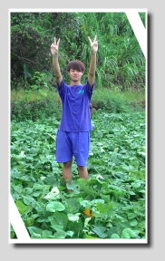
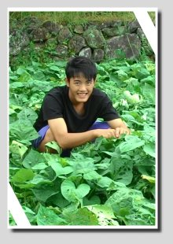
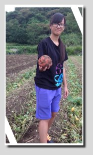
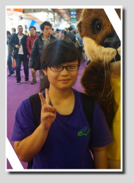

FIELD JOURNAL / 2015 專題紀錄
八個人，把一顆地瓜的故事做好。
每一位成員都有自己的任務與收穫；在這裡讀見小組分工、合作與成長的原始心得。
游博文 ( 組長 )


任務：文字組
心得
這次專題讓我們學到很多。網頁製作、資料整理、團隊協調上的問題，都得想盡辦法解決，一直僵在原地不是辦法。我們透過訪問老街攤販與店家、採訪地瓜達人、料理 DIY、焢窯、查閱書籍與網路等方式蒐集資料，最後統整起來放上網頁。過程很辛苦，但老師始終無怨無悔地幫助我們，組員也盡心協助；再困難的問題，他們都不抱怨。雖然難免有爭執，我們仍互相包容、一起找出解決方法，整個團隊也因此更有默契、更有效率。專題不是一個人能完成的，這麼浩大的工程，靠的是大家投入的時間與精力。老師都不嫌累了，我們怎麼能喊累呢？
我在專題中遇到不少困難：資料太繁雜不易整理，我會請組員一起討論、整理；製作網頁是我們第一次接觸，難免卡關，幸好有華欣老師協助我們度過難關；還有進度沒掌控好，時間有點緊迫，最後靠著頻繁的討論與研究才把這項艱難的任務搞定。還好有組員們和老師們的協助，讓我們能順利在時間內完成專題。
林紀揚

興趣：看小說、看動漫
任務：計畫擬定、計畫統籌、計畫執行、網頁設計、網頁美工、文字撰寫
心得
經過一個學期的專題課，有成就感也有挫敗感，轉眼間已到尾聲。從無到有是一件非常辛苦的事，但看到自己完成的成果，就會有一種充實感，以及想繼續前進的動力。專題中遇到許多困難，像是與同學、老師的溝通、訪問的技巧、計畫的設計與網頁製作，但我們都一一克服了。我想，面對困難並想出方法解決，是我在這個專題中最大的收穫。
一開始討論時，大家對主題並沒有太多想法，溝通上也出現分歧，連接下來的流程都無法運轉，主題方向甚至出現偏差。因為溝通不良，沒辦法把真實的想法說出來，我們面臨了一次危機。後來我們了解到，專題不是一個人埋頭苦幹就能完成，而是大家要把話說清楚、分享手上的資料；經過互相討論與交換，才會有新的想法，讓專題的內容更充實、完整。
訪問時我們都有些緊張，擔心問得不好、得不到想要的答案。但進入訪問狀態後，會發現自己有前所未有的專注力：仔細聆聽受訪者的回答，第一時間整理、吸收、內化成自己的想法，再分析其中有沒有我們要的答案。這大大增進了我的語言表達能力，效果比課堂上的練習好得多。和陌生人搭話原本是件異常困難的事，但只要跨出第一步，就會發現自己比想像中表現得更好。如果一直擔心，永遠無法達成目標；試著跨出第一步，哪怕只是一小步，也確實朝目標更近了一點。
專題進入最後階段時，團隊合作格外重要。美工組全力製圖、修圖，把設計好的圖交給網頁組，在最短的時間內完成排版；文字組負責撰寫，把我們想呈現的概念寫成文章，經指導老師修改、討論後定案。這個過程最需要的是配合，每個人都缺一不可，因為只要有一個環節延遲，就會拖累後面的進度。
「能者多勞」這句話，在完成專題之前我是認同的；完成之後，我有了另一番看法。我認為應該改成「勞者多能」：做得越多、付出越多，得到的也越多。有些人抱著搭順風車的心態，覺得反正最後會有人做，計較東、計較西，在他們眼中別人是笨人、自己是聰明人。在我看來，那只是聰明反被聰明誤；傻子默默把所有事做完，到頭來得到最多的也是傻子。感謝囿蓉，和我一樣是默默付出的傻人。不知道有幾個週末我們一起熬夜趕網頁、好幾個早自習一起討論架構；很多次我感到灰心時，是你讓我重新振作起來，真的很謝謝你！
這次專題也麻煩了許多人，在此向幫助過我們的人致上最高的感謝，謝謝他們無私的協助。專題能順利完成，都是他們的功勞；老師們的指導，也讓我受益良多。最後我只想說：大家的辛苦不會白費！
李囿蓉


任務：網頁排版
心得
經過這次專題的「摧殘」，我想我更加茁壯了：處理問題的方法、與人溝通的方式、心態的轉變、網頁的技術，還有大家為了同一個目標共同努力。過程中有爭執、有挫折，甚至一度想放棄，但我們還是撐過來了。從失敗中爬起來、想辦法解決，我覺得這就是我最大的收穫。
做網頁之前，一定要先把資料整理好，統整、分析、內化後，再用自己的想法表達出來。在表達的過程中，我漸漸發現自己的缺點：平常閱讀的文章不夠，沒辦法用優美的文字詮釋想表達的意思。但我最後還是撐過去了。
設計訪問問題時，我想了三十幾個問題，送給老師看卻被退件。老師說：「這不是我想要的，回去再想想吧！」也給了我幾個建議，但當時我無法理解。之後我連續送了好幾次差不多的問題，老師終於看不下去，要我整個重寫，還給我別組的範例。這對我打擊很大，甚至想放棄。我找了紀揚，把自己的想法告訴他，他給了我許多建議，要我轉換想法；討論一個小時後，我終於開竅了。隔天我把新的想法和問題給老師看，老師說了一句：「寫得不錯！」頓時有了莫名的成就感。
問題是我設計的，當然也要擔任訪問的一員。跟熟悉的人可以侃侃而談，跟陌生人卻是一大挑戰，擔心自己問不好、問不到想要的答案。訪問只有一次機會，從開始到結束都要繃緊神經仔細聆聽，聽完答案還要分析有沒有哪裡沒問到。過程很緊張，也讓我學到很多。
最後階段大家拼命趕工，我和紀揚經常做到半夜十二點：紀揚把架構、文字趕出來，我負責文字與圖片的排版，隔天上課都沒有精神。一個團隊裡有人一直為隊伍付出，當然也有想搭便車的人。我忽然領悟到，重點不是會不會做，而是想不想做；做得越多，學得越多，吃苦當吃補。從做小事就能看出一個人將來的成就，有多少名人不是經過許多磨練與歷練，才有今天的成就。
最後我想感謝華欣老師、紀揚和博文。華欣老師教了我很多解決問題的方法；紀揚幫我從谷底爬起來，給我許多鼓勵，也常常教訓我做事的態度，我還是非常感謝他。也謝謝其他默默付出的老師與同學。
林姿褎


興趣：拍照、騎腳踏車
任務：美工組、工作進度
心得
大家都是第一次參加網界博覽會，對做網頁的事完全不懂，老師從頭教我們怎麼製作網頁。其實暑假一開始，我們的主題是肉粽，想做石門或三芝一家叫「劉家肉粽」的店，因為組裡有同學住石門，應該很方便。開學後，班上一位從社會組轉來資訊組的同學很有想法，他家裡種地瓜，便提議把主題改成地瓜：距離近，也不用花車錢。大家一致同意，主題就這樣定了。
決定主題後，前段時間我們一直在看地瓜料理，偏偏都接近晚餐時間，肚子咕嚕咕嚕叫，我們卻還對著地瓜料理流口水。大部分的時間則是在看以前網界博覽會的得獎作品，了解比賽的流程、這些作品為什麼能得獎，以及我們要怎麼做才能更好。一開始比較輕鬆，沒什麼壓力地看地瓜相關的東西；過了幾個星期，壓力來了，九月一下子就到十一月，發現時間快到了，大家都不能玩，要開始認真了。不過我們這組大致都按照進度進行，所以沒有太大的慌張感。
做地瓜這個主題，最好玩的就是 DIY 了。自己做蛋糕和披薩的感覺真好，重點是完全不分你我，大家做的大家一起吃，不計較份量，吃得開心就好。就算有人沒吃到或只吃到一點點也沒關係，因為我覺得過程最重要。
陳佩茹


興趣：聽音樂
任務：美工
心得
第一次參加專題製作，過程中參加了很多有趣的活動：挖地瓜、焢窯、料理 DIY、老街採訪。但做網頁時我覺得很痛苦，因為很多東西都不是我的專長；我常想幫忙，又怕出錯害到整組辛苦做的網頁。我負責修圖，做照片邊框時常被說審美觀很差或很怪。活動中我做了很多沒做過的事，像是拿鋤頭挖地瓜，原以為很簡單，親身體驗才發現沒那麼容易，鋤頭比想像中重，還需要技巧才不會砍到地瓜。焢窯時，第一次堆土塊雖然堆得很漂亮，燒的時候卻突然倒了，重堆好幾次才抓到技巧，最後終於完成。從製作專題的過程中，我了解到團隊合作的重要，也學會了解隊友的想法、互相討論指教；雖然會有意見不合的時候，大家都樂意接受並一起討論。做專題網頁沒有想像中簡單，不過只要有團隊精神，就能解決任何困難！
張林

興趣：畫畫、聽音樂
任務：繪畫美工
心得：
第一次聽到要做專題，非常驚慌，完全不知道該做些什麼。
最初我們想以肉粽為主題，經過再三討論，還是決定以金山的特產地瓜為主。一開始我分配到撰寫地瓜來台的歷史，但我的文筆不好，光是開頭就想了很久；第一次寫難免達不到要求，因為寫出來的幾乎是網路資料稍作修改，很少有自己的想法，第一次給老師過目時被念得很慘，心裡難免難過。但我還是努力重寫，終於勉強過關。寫作我實在不在行，花了很長的時間，中間有無數抱怨在心裡迴盪，也總想著能頂替我的人很多，但我不能半途而廢，至少要把它完成。寫完之後，我開始設計地瓜的圖。原本我覺得自己無法勝任，雖然喜歡畫畫但畫得普通，怕畫出來不是大家要的；組員給了我肯定，讓我有信心相信自己可以。一開始畫得不好，越後面越進步，我想是因為有興趣，所以這份任務我做得很開心。雖然要畫的圖太多，時常鬧脾氣，嘴上不願意，還是會去做，因為這是我唯一能做好的事，當然不能不做。現在畫得差不多了，可以小小休息一下。
錢佳瑩
.jpg)
興趣：聽音樂、游泳
任務：繪畫美工
心得
這是我第一次參加專題製作。一開始我們決定以石門肉粽為主題，後來因為金山的特產是地瓜，題目改成了金山地瓜。小組討論後，我們決定進行焢窯體驗。實作當天第一次堆土窯，眼看快要成功，想不到在最後關頭出了紕漏，前功盡棄；但我們沒有放棄，最後合力搭起土窯，品嘗到香噴噴的烤地瓜。
過了一段時間，我們到烹飪教室做地瓜料理，一番努力後做出了地瓜披薩和地瓜戚風蛋糕，味道相當不錯！之後我們到金山老街訪問販售地瓜產品的店家，有些店家還送我們自家的產品。這次訪問讓我更了解，原來地瓜可以做成這麼多各式各樣的產品。
我是美工組，負責畫圖。畫圖的過程讓我體會到用繪圖板畫畫真不容易，最後修圖更累人，要非常仔細地修飾有瑕疵的地方，真是身心俱疲；但完成之後，卻有一種說不出的成就感。這次專題真的讓我學到很多。
廖怡珍
.jpg)
興趣：唱歌、跳舞
任務：繪畫美工
心得
一開始大家對專題製作都很陌生，經過老師指導有了基本概念，才慢慢進入狀況。起初覺得專題還滿簡單的，其實不然，越到後面壓力越大。我負責美工，算是比較輕鬆的部分，反倒是其他組員、組長和老師的壓力比較大。
製作過程中參加了許多活動：老街參訪、焢窯、地瓜料理 DIY，還有挖地瓜。雖然辛苦，卻讓我了解團結合作的精神。我最喜歡的是地瓜料理 DIY，大家互相幫忙、互相抄筆記，美食出爐後不分你我，一起分享不同口味的披薩和蛋糕。過程很艱辛，但只要看見大家的笑容，就覺得可以一起往同一個目標邁進；再辛苦也不能放棄大家一起努力過的，最後的笑容一定是最燦爛的。